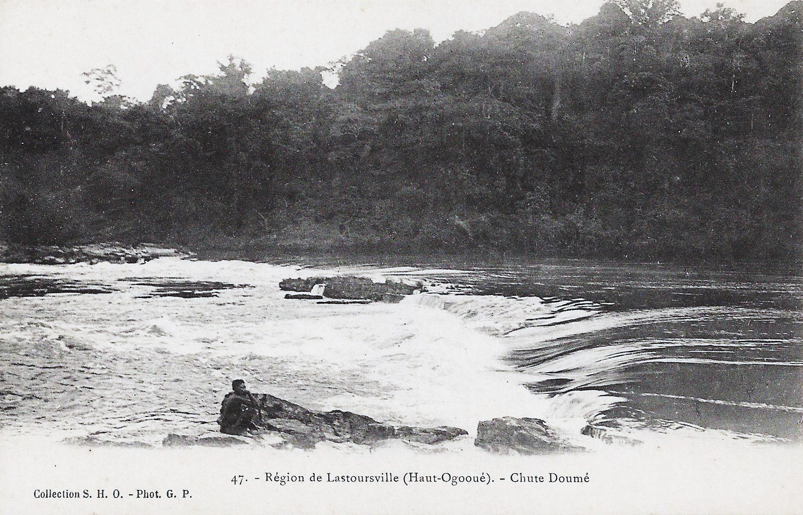
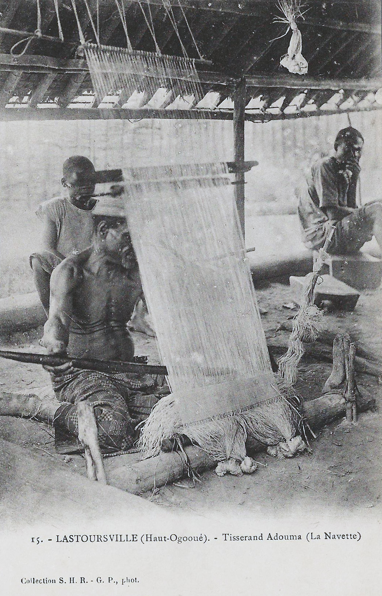
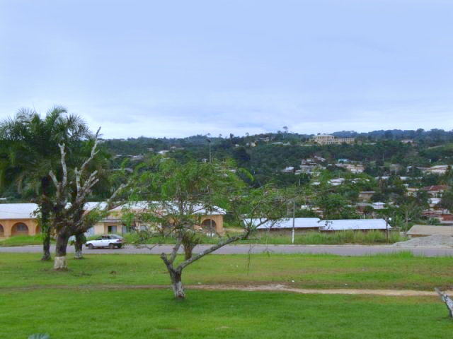
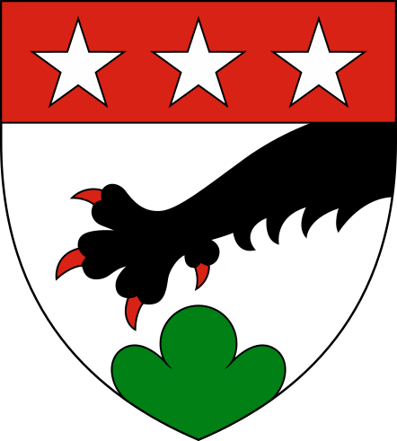

Aux confluences de la forêt et des rivières, une ville façonnée par ses peuples depuis des siècles.
Le nom de la ville a une double origine linguistique, les deux convergeant vers le même sens : celui d'un aîné respecté, d'un patriarche.
Cette étymologie reflète la structure sociale des peuples fondateurs de la région, où l'autorité de l'aîné de clan constitue le fondement de l'organisation communautaire. Les deux peuples — Nzebi et Pové — étant fortement implantés dans la vallée de la Lolo, leur convergence sémantique ancre profondément le nom dans l'identité locale.
Koula-Moutou est implantée à une altitude moyenne de 351 m, dans un relief de petites collines couvertes de forêt équatoriale, à 621 km au sud-est de Libreville. Ses coordonnées géographiques sont approximativement 1°08' S, 12°28' E.
La ville est traversée par la rivière Bouenguidi, qui la divise en deux rives et se jette en aval dans la rivière Lolo, affluent majeur de l'Ogooué qui a donné son nom à la province. C'est sur les berges de ces deux cours d'eau que les premiers établissements humains se sont structurés.
Altitude de la ville
Distance de Libreville (RN6)
Température annuelle moyenne
Précipitations annuelles
Du peuplement ancestral à la ville chef-lieu d'aujourd'hui, les grandes étapes de la construction de Koula-Moutou.
La région est peuplée de longue date par les peuples Kota (Shamaye, Wumbu, Ndasa). À partir du milieu du XVIIIᵉ siècle, les Nzebi entrent au Gabon depuis l'est (région de Moanda) et les Adouma descendent du fleuve Sebe vers l'Ogooué, refoulant progressivement les Kota vers le nord.
L'explorateur François Rigail de Lastours remonte l'Ogooué jusqu'à sa confluence avec le Lolo en 1855. En 1882, Lastoursville est fondée (nommée en son honneur) et devient le centre administratif colonial de la « région des Adouma ».
En 1949, l'administration coloniale française transfère le chef-lieu de Lastoursville à Koula-Moutou, malgré les protestations des habitants de Lastoursville. L'église catholique de Koula-Moutou est construite la même année, marquant le début du développement urbain de la ville.
En mai 1953, l'administration coloniale basée à Brazzaville rebaptise officiellement la région « Ogooué-Lolo » — elle devient la 7ᵉ région du Gabon. Le nom est formé des deux fleuves structurants : l'Ogooué (à Lastoursville) et le Lolo (à Koula-Moutou).
Après l'indépendance du Gabon en 1960, Koula-Moutou se développe comme pôle administratif et économique. La filière forêt-bois, l'implantation des services de l'État et la construction d'infrastructures (hôpital, lycées, aérodrome) structurent la ville.
La population de Koula-Moutou passe de 11 773 habitants (1993) à 16 270 (2003) puis 25 651 (2013), soit plus du double en vingt ans. Cette croissance reflète l'attraction du chef-lieu provincial sur les populations rurales de la province.
Cartes postales du début du XXᵉ siècle et regards d'aujourd'hui sur la région de l'Ogooué-Lolo.




Les armoiries de Koula-Moutou appartiennent à la série héraldique des villes du Gabon, créée en 1973. Leur blasonnement officiel est :
« D'argent à la patte de lion de sable, armée de gueules, mouvant du canton senestre en chef, soutenue d'un mont de trois coupeaux de sinople mouvant de la pointe ; au chef de gueules à trois étoiles du champ. »
Données issues des recensements généraux de la population et du logement (RGPL) du Gabon.
| Année | Population de la ville | Population de la province | Observations |
|---|---|---|---|
| 1980 | — | 49 915 | Recensement national |
| 1993 | 11 773 | 43 915 | Recensement RGPL — exode rural vers Libreville |
| 2003 | 16 270 | 64 534 | Recensement RGPL — reprise de la croissance |
| 2013 | 25 651 | 65 771 | Dernier recensement officiel disponible |
Sources : Recensements Généraux de la Population et du Logement (RGPL) du Gabon, citypopulation.de
La diversité ethnolinguistique de l'Ogooué-Lolo est l'une des richesses fondamentales de la province.
Peuple majoritaire du département Lolo-Bouenguidi, les Nzebi sont entrés au Gabon vers le milieu du XVIIIᵉ siècle. Réputés pour leur métallurgie du fer et leur artisanat du bois, ils sont organisés en 12 clans matrilinéaires. Leur tradition inclut les rites Bwiti, Mwiri, Ndjobi et Mabandji. Population estimée : 264 000+ au Gabon.
Sous-groupe Nzebi établi sur les rives de l'Ogooué près de Lastoursville, arrivés vers 1750 depuis le fleuve Sebe. Experts constructeurs de pirogues en okoumé, ils furent les grands commerçants intermédiaires entre l'intérieur et la côte atlantique. Langue : douma (~9 841 locuteurs). Culture : danse Lingwala, masques anthropomorphes mvudi.
Gardiens du rite Bwiti dans sa forme la plus profonde (avec les Apindji), les Mitsogho habitent les forêts à la frontière des provinces Ngounié et Ogooué-Lolo. Leur harpe ngombi et leurs cérémonies nocturnes constituent un patrimoine spirituel d'une rare profondeur, classé au patrimoine culturel immatériel du Gabon.
Peuple Bantu du groupe Membè, établi dans le canton Lolo-Wagna et à Iboundji. En langue Pové (ghé-vové), kolomoto signifie « aîné »—lien direct avec le nom de Koula-Moutou. Leurs masques sculptés (masque Bodi) sont reconnaissables à leurs formes plates et allongées. Population : ~15 000 locuteurs estimés.
Communauté Bantu du groupe Shira-Punu, présente à la frontière des provinces Ogooué-Lolo et Ngounié (zones d'Iboundji, Popa et Pana). Population estimée à 50 000–60 000 individus. Langue : isangu. Le Festival culturel Massango est l'une des grandes manifestations annuelles de la province.
Les Babongo (Pygmées) sont présents dans les zones forestières profondes de la province, dépositaires d'un savoir ancestral sur la forêt et ses plantes médicinales. Les Akélé constituent une autre communauté significative de Koula-Moutou, portant des traditions culturelles propres.
Koula-Moutou administre une province organisée en quatre départements. Superficie : 25 380 km² — IDH 2022 : 0,628 (développement humain moyen).
| Département | Chef-lieu | Pop. 2003 | Pop. 2013 | Caractéristiques |
|---|---|---|---|---|
| Lolo-Bouenguidi | Koula-Moutou | 26 630 | 30 643 | Centre administratif provincial, vallée de la Bouenguidi et de la Lolo |
| Mulundu | Lastoursville | 26 036 | 27 750 | Gare du Transgabonais, grottes calcaires, bord de l'Ogooué |
| Lombo-Bouenguidi | Pana | 6 397 | 4 635 | Zones rurales et agricoles, forêts denses |
| Offoué-Onoye | Iboundji | 5 471 | 2 743 | Reliefs du Massif du Chaillu, Mont Iboundji (972 m), cascades |
Sources : Recensements RGPL 2003 et 2013 du Gabon
Créé le 30 août 2002, le parc national de Birougou s'étend sur 690 km² (69 000 ha) à cheval sur les provinces de l'Ogooué-Lolo et de la Ngounié, le long de la frontière avec la République du Congo.
Classé site Ramsar en 2007 et inscrit sur la liste indicative du patrimoine mondial UNESCO (critères vi, ix et x), il abrite une faune et une flore exceptionnelles liées à la forêt de montagne du Massif du Chaillu.
Des femmes et des hommes qui ont marqué l'histoire de la ville et du Gabon.
Économiste et homme politique gabonais né à Koula-Moutou. Ancien Ministre de l'Économie (2008-2009), du Budget (2009) et de la Jeunesse (2014+). Élu président du Parti Démocratique Gabonais (PDG) en janvier 2025. Député de la 1ʳᵉ circonscription de Koula-Moutou. À l'origine de la création du CDI Paul Kouya et de l'IUST à Koula-Moutou.
Explorateur français qui remonte l'Ogooué en 1855 et atteint la confluence avec le Lolo, ouvrant la voie à la pénétration coloniale dans la région. La ville de Lastoursville (deuxième ville de la province) porte son nom.